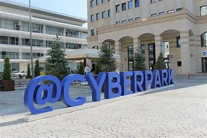

Cyberpark, Kozhikode has been envisioned and conceptualized as a major IT hub catering to the northern part of Kerala towards promoting IT/ITeS sector by Government of Kerala, after a trail-blazing performance with the success of Technopark, Trivandrum and Infopark, Kochi. Cyberpark, Kozhikode was established under Cyberparks Kozhikode an autonomous society registered under the Society Registration Act 1860, on 28th January 2009. The ultimate objective was to facilitate state of the art IT infrastructure space with all supporting facilities whereby creating an IT ecosystem which would enhance the development of Information & communication Technology & contribute significantly in direct/Indirect employment opportunities and to GDP in the state.


| Name | Id | Designation |
|---|---|---|
| Rahul | 1 | Good |
| Ram | 2 | Good |
| Athira | 3 | Good |
| Anu | 4 | Excellent |
| Akash | 5 | Good |